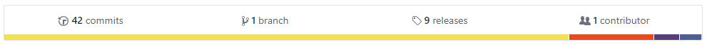
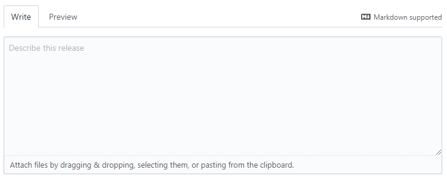
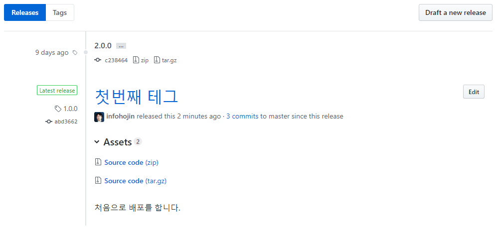

깃의 세 번째 항목으로 배포(release) 기능이 있습니다.
로컬 저장소에서 생성된 태그는 깃허브에서 release로 표시됩니다.

깃허브에서 release는 깃 저장소의 태그를 의미합니다. 깃허브는 깃의 태그를 보다 직관적으로 배포하기 위해서 몇 가지 추가 기능들을 같이 제공합니다.

새로운 release를 깃허브에서 생성합니다. 깃허브 저장소에서 직접 태그를 추가하여 새로운 release를 만들 수 있습니다.

깃의 태그와 깃허브의 release는 같은 동작입니다.
Release 탭으로 이동하여 create a new release를 선택합니다.
또는 생성된 태그 목록에서 Draft a new release를 통하여 추가할 수 있습니다.

깃허브에서 새로운 배포를 생성하면 태 같이 생성이 됩니다. 이렇게 생성된 태그는 로컬 저장소에는 없습니다.
pull 명령어를 이용하여 로컬 저장소를 갱신해주어야 합니다.
태그 버전을 지정합니다. 버전은 지정하는 방법은 다양합니다. 최근에는 숫자로 구성된 3자리를 많이 사용합니다.

마일리톤 기능을 같이 사용하고 있다면, 버전 이름을 마일리톤과 같이 일관성 있게 사용하는 것이 좋습니다.
오른쪽 리스트를 통하여 태그 생성을 위한 브랜치와 커밋을 선택할 수 있습니다.
Branchs를 선택하면 브랜치의 마지막 커밋을, Recent Comments를 선택하면 임의 커밋 하나를 선택할 수 있습니다.
하지만 태그는 master를 기준으로 작성하는 것을 추천합니다.
배포 타이틀을 입력합니다. 타이틀 기능은 깃허브 기능으로 배포를 좀 더 명확히 하기 위해서 지원하는 기능입니다.

배포와 관련된 상세 정보를 입력할 수 있습니다.

코드와 함께 배포할 수 있는 첨부 파일을 넣을 수 있습니다. 소스 코드를 컴파일한 버전 등을 같이 배포할 경우 이 기능은 매우 유용합니다.

이 항목을 체크하면 시험판 버전의 태그를 생성하여 배포할 수 있습니다.

배포 버전 위에 pre-release 마크가 출력됩니다.
Develop 브랜치, release 브랜치의 생성 과정에서 테스트를 위한 임시 버전이 필요한 경우 사용하면 편리합니다.
Publish Release 대시보드에 Draft 기능으로 저장할 수 있습니다. 반복적으로 수정이 많아 계속 배포해야 할 경우 임시적인 방편입니다. 드래프트로 저장하면 태그 가 없는 참조 형태로 저장이 됩니다.
모두 작성한 후에 publish release를 선택합니다.
깃허브는 생성된 배포 목록을 버전순으로 출력합니다. 가장 마지막 버전을 상단에 배치합니다.

기존에 tag 명령어를 통하여 업로드한 배포를 깃허브에서 수정할 수 있습니다.

태그를 선택한 후에 수정 버튼을 클릭합니다. 기존에 태그 버전만 출력됩니다. 그 외의 타이틀과 내용을 작성합니다.

깃허브로 배포를 작성하게 되면 초록색 마크도 같이 표시됩니다. latest release라는 글씨를 확인할 수 있습니다.
이 마크는 깃허브에서 생성 또는 수정을 한 경우에만 출력됩니다.
